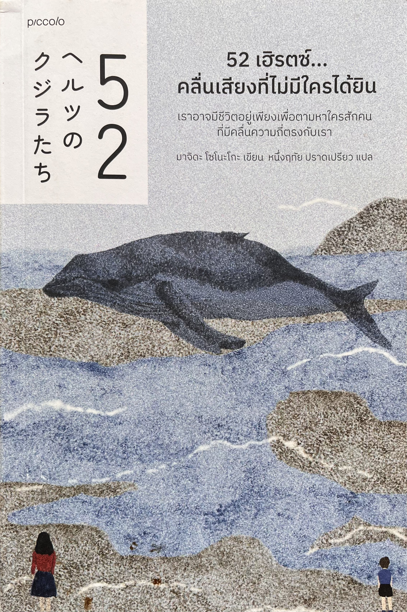

จะเป็นอย่างไร...
" ถ้าทั้งชีวิตเราต้องส่งเสียงเรียกหา
ใครสักคนที่ไม่เคยมีอยู่จริง "

"52 เฮิรตซ์ คลื่นเสียงที่ไม่มีใครได้ยิน" วรรณกรรมแปลญี่ปุ่นสุดลึกซึ้งที่จะพาคุณไปรู้จักกับชีวิตของตัวละครที่ถูกทอดทิ้งและเผชิญกับบาดแผลในจิตใจ พวกเขาเปรียบเสมือน "วาฬ 52Hz" ที่ส่งเสียงด้วยคลื่นความถี่สูงเกินกว่าวาฬตัวอื่นในโลกจะได้ยิน แต่แล้วเรื่องราวอันแสนอบอุ่นที่ค่อย ๆ เยียวยาหัวใจที่เคยบอบช้ำก็ได้เริ่มต้นขึ้น
จะเป็นอย่างไร...
" ถ้าทั้งชีวิตเราต้องส่งเสียงเรียกหา
ใครสักคนที่ไม่เคยมีอยู่จริง "
"52 เฮิรตซ์ คลื่นเสียงที่ไม่มีใครได้ยิน" วรรณกรรมแปลญี่ปุ่นสุดลึกซึ้งที่จะพาคุณไปรู้จักกับชีวิตของตัวละครที่ถูกทอดทิ้งและเผชิญกับบาดแผลในจิตใจ พวกเขาเปรียบเสมือน "วาฬ 52Hz" ที่ส่งเสียงด้วยคลื่นความถี่สูงเกินกว่าวาฬตัวอื่นในโลกจะได้ยิน แต่แล้วเรื่องราวอันแสนอบอุ่นที่ค่อย ๆ เยียวยาหัวใจที่เคยบอบช้ำก็ได้เริ่มต้นขึ้น
รายละเอียดหนังสือ
ข้อมูลเบื้องต้นของหนังสือ 52 เฮิรตซ์...คลื่นเสียงที่ไม่มีใครได้ยิน
ผู้แต่ง
มาจิดะ โซโนะโกะ
ผู้แปล
หนึ่งฤทัย ปราดเปรียว
สำนักพิมพ์
Piccolo
หนังสือเล่มนี้ ให้อะไรกับเรา?
หนังสือเล่มนี้ทำให้เราได้เรียนรู้ถึงพลังของการรับฟัง เข้าใจ และการเยียวยาซึ่งกันและกัน ผ่านเรื่องราวของผู้คนที่ต้องเผชิญกับความโดดเดี่ยว การถูกทอดทิ้งและบาดแผลที่เกิดขึ้นจากอดีต ทำให้เราได้ตระหนักว่า คนรอบข้างบางคนอาจกำลังส่งเสียงร้องขอความช่วยเหลืออยู่เงียบ ๆ โดยที่เราไม่ทันสังเกต เพียงแค่การรับฟังอย่างตั้งใจ การใส่ใจ หรือการยื่นมือเข้าไปช่วยเหลือในเวลาที่เหมาะสมก็อาจมีความหมายและเปลี่ยนแปลงชีวิตของใครบางคนได้ นอกจากนี้ หนังสือยังมอบความหวังให้กับผู้ที่กำลังรู้สึกโดดเดี่ยวว่า แม้เราจะรู้สึกแตกสลายหรือเปรียบเสมือน “วาฬ 52Hz” ที่ส่งเสียงออกไปโดยไม่มีใครได้ยิน แต่ไม่ได้หมายความว่าเราจะต้องอยู่เพียงลำพังตลอดไป เพราะอาจมีใครสักคนที่พร้อมจะรับฟังและเข้าใจเราในสักวันหนึ่งและบางครั้งการได้ช่วยเหลือหรือโอบอุ้มใครสักคน ก็อาจเป็นสิ่งที่ช่วยเยียวยาหัวใจของเราเอง ทำให้เราเห็นคุณค่าของการมีชีวิตอยู่ ความสัมพันธ์ระหว่างผู้คนและความอบอุ่นเล็ก ๆ ที่สามารถช่วยเติมเต็มความหมายให้กับชีวิตได้
ความรู้ที่ได้จากหนังสือเล่มนี้
บาดแผลทางจิตใจ
ความรุนแรงในวัยเด็กส่งผลต่อคุณค่าในตนเองรวมถึงการไว้ใจผู้อื่น
เมื่อเติบโตเป็นผู้ใหญ่
โครงสร้างสังคม
เห็นช่องโหว่ทางกฎหมายและข้อจำกัดในการช่วยเหลือเหยื่อทารุณกรรม
สัญญาณความเงียบ
การร้องขอความช่วยเหลือมักมาในรูปแบบความเงียบและการปิดกั้น
.png)
การเยียวยาจิตใจ
การรับฟังโดยไม่ตัดสินและการโอบอุ้มกันช่วยกอบกู้หัวใจที่แตกสลาย
Other Books Recommend
หนังสือสนุกๆที่ฉันอยากแนะนำ